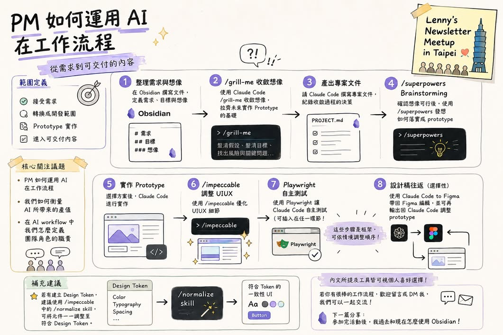

目標：把圖片裡「從需求到可交付內容」的流程，轉成一套可重複使用的 skill 編排法。重點不是背哪個 skill，而是判斷每一步需要什麼 artifact，然後選能產生它的工具。

圖片的主線其實是這句話：
需求 → 收斂 → 文件 → 發散 → 原型 → 校準 → 驗證 → 交付
這條線可以用 mattpocock/skills，也可以混用 Obsidian、Figma、Playwright、文件、簡報、試算表、圖片生成、browser QA，甚至一般 prompt。判斷標準只有一個：這一步有沒有把上一個輸入變成下一個可驗收 artifact？
| 槽位 | 圖片例子 | 可替換選項 | 輸出 |
|---|---|---|---|
| 1. 定義範圍 | 接受需求、轉成開發範圍 | Obsidian、obsidian-vault、文件筆記 | 需求摘要 |
| 2. 收斂假設 | /grill-me 收斂想像 | grill-with-docs、訪談、問題清單 | 風險與開放問題 |
| 3. 固化文件 | 產出 PROJECT.md | to-prd、設計 brief、issue spec | 可引用的專案文件 |
| 4. 發散方案 | /superpowers brainstorming | design-an-interface、writing-fragments、imagegen | 可比較的候選方案 |
| 5. 製作原型 | Claude Code 實作 UI | prototype、presentations、spreadsheets、hyperframes | 可打開的 artifact |
| 6. 校準驗證 | /impeccable、Playwright 自測 | Browser 截圖、playwright、review、設計 token 檢查 | 測試與回饋紀錄 |
| 7. 交付接力 | Figma/Claude Code 往返 | handoff、PR、簡報、文件、prototype 連結 | 下一個人能接手 |
/superpowers、/impeccable 或 /normalize，不要硬找同名工具。問自己它在流程裡扮演什麼角色：發散、校準，還是統一設計 token？再選等價工具。用一句話寫出：誰要什麼、為什麼現在要、最後要交付什麼。例：PM 需要一個可點的設定頁 prototype，讓設計師明天 review。
如果需求還霧，先收斂；如果方向已定，做 prototype；如果 artifact 已有，跑驗證。不要因為某個 skill 很酷就先用它。
例：需求摘要、PROJECT.md、三個方案、可點 prototype、Playwright 截圖、handoff 文件。沒有輸出的步驟先砍掉。
不要一次開滿所有工具。先跑：需求摘要 → grill → prototype → browser/Playwright 檢查 → handoff。真的缺發散或設計 token，再插入對應槽位。
交付成果要包含三件事：artifact 本身、怎麼驗證過、下一個人該怎麼接。這讓 AI workflow 不只是產出，而是能接進團隊流程。
1. 選 skill 前，第一個問題該問什麼？
2. 圖上有你沒有的 skill 名稱時，該怎麼辦？
3. Playwright 自測最適合放在哪裡？
拿一個本週真實產品、工程、研究、營運或治理需求，照 AI 工作流編排速查表 填一次七個槽位；需要對照實例時，先看 職能工作流案例總覽。做完後回對話視窗問你的 AI 老師：「這條 workflow 哪一步可以縮短？」
主要閱讀資源：PM 如何運用 AI 在工作流程圖（本課主素材）、AI 工作流編排速查表與 職能工作流案例總覽。
{kind=link}